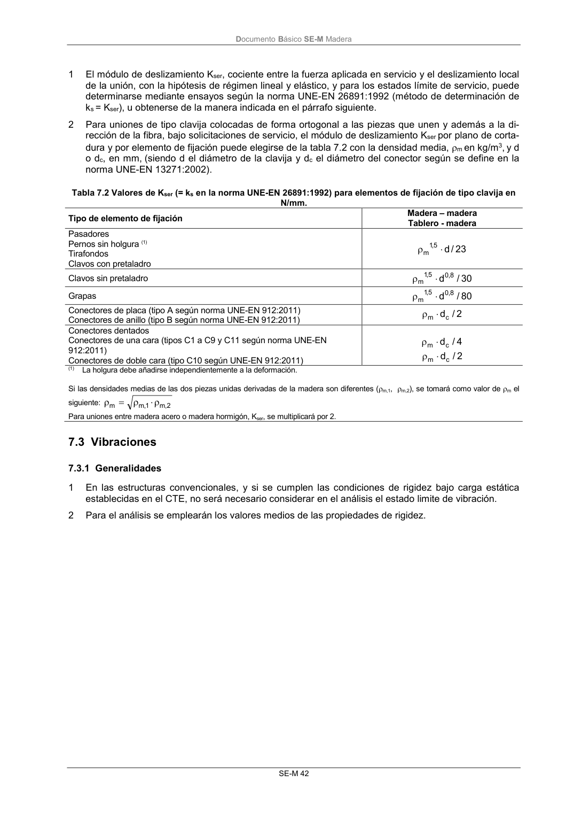

DB-SE-M Madera · edición 2019-12-20 · capa oficial
Documento DB-SE-M-oficial · SHA-256 del PDF 26b5819839ebfda78b0b119c5e76a0a37773b0d763c05688541870075df93718
Copia fiel del PDF fuente · Fuente oficial
Ficha de la disposición en la fuente oficial
Formatos: JSON del segmento · Markdown
7.2 Deslizamiento de las uniones DocumentoBásico SE-M Madera SE-M 42 1 El módulo de deslizamiento Kser, cociente entre la fuerza aplicada en servicio y el deslizamiento local de la unión, con la hipótesis de régimen lineal y elástico, y para los estados límite de servicio, puede determinarse mediante ensayos según la norma UNE-EN 26891:1992 (método de determinación de ks = Kser), u obtenerse de la manera indicada en el párrafo siguiente. 2 Para uniones de tipo clavija colocadas de forma ortogonal a las piezas que unen y además a la di- rección de la fibra, bajo solicitaciones de servicio, el módulo de deslizamiento Kser por plano de corta- dura y por elemento de fijación puede elegirse de la tabla 7.2 con la densidad media, m en kg/m3,y d o dc, en mm,(siendo d el diámetro de la clavija y dc el diámetro del conector según se define en la norma UNE-EN 13271:2002). Tabla 7.2 Valores de Kser (= ks en la norma UNE-EN 26891:1992) para elementos de fijación de tipo clavija en N/mm. Tipo de elemento de fijación Madera – madera Tablero - madera Pasadores Pernos sin holgura (1) Tirafondos Clavos con pretaladro 23 / d 5 ,1 m Clavos sin pretaladro 30 / d 8 , 0 5 ,1 m Grapas 80 / d 8 , 0 5 ,1 m Conectores de placa (tipo A según norma UNE-EN 912:2011) Conectores de anillo (tipo B según norma UNE-EN 912:2011) 2 / dc m Conectores dentados Conectores de una cara (tipos C1 a C9 y C11 según norma UNE-EN 912:2011) Conectores de doble cara (tipo C10 según UNE-EN 912:2011) 4 / dc m 2 / dc m (1) La holgura debe añadirse independientemente a la deformación. Si las densidades medias de las dos piezas unidas derivadas de la madera son diferentes (m,1, m,2), se tomará como valor de m el siguiente: 2 , m 1, m m Para uniones entre madera acero o madera hormigón, Kser, se multiplicará por 2.
